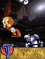
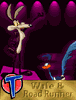

From fighting the Axis in World War II to traveling in outer space, Bugs Bunny has been around the block. Read the life stories of all the Looney tunes below.
 
Joe Adamson, Film Historian/Filmmaker, is the author of Bugs Bunny: Fifty Years and Only One Grey Hare and Tex Avery: King of Cartoons.